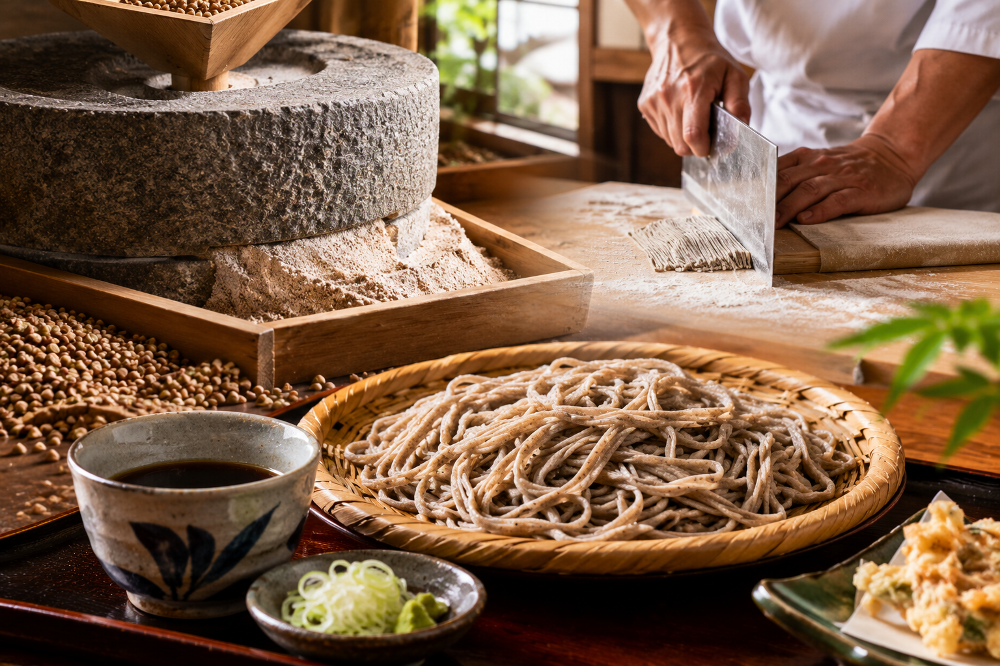

山寺（立石寺）から車で約5分｜天童で味わう至高の一杯
「手打ちそば やまぶき」では、石臼で丁寧に粗挽きにしたそば粉を使用した純手打ちそばをご提供しております。
そば本来の豊かな香りとしっかりとした喉越し、粗挽きならではの食感を存分にお楽しみいただけます。山形の名刹・山寺観光の際のお食事や、お昼のひとときにぜひお立ち寄りください。

名刹「山寺（立石寺）」から車で約5分。観光の合間の昼食・お立ち寄りスポットとして最適です。
11:00～15:00のランチ営業。天童南駅方面からのドライブや本格そばランチにおすすめです。
石臼粗挽きのこだわり純手打ちそばをじっくり味わいたい蕎麦好きの方に選ばれています。
| 店名 | 手打ちそば やまぶき（てうちそば やまぶき） |
|---|---|
| 住所 | 〒994-0054 山形県天童市荒谷1973-1361 |
| 電話番号 | 023-651-4503 |
| 営業時間 | 11:00～15:00（昼食営業のみ） |
| 定休日 | 毎週木曜日（※祝日の場合は営業） |
| ジャンル | 手打ちそば、そば、和食 |
| ご予算目安 | 昼：1,000円～1,999円 |
| アクセス |
・山寺（立石寺）より車で約5分 ・JR天童南駅より車で約11分 |
| 公式サイト | http://yamabuki.my.coocan.jp/ |